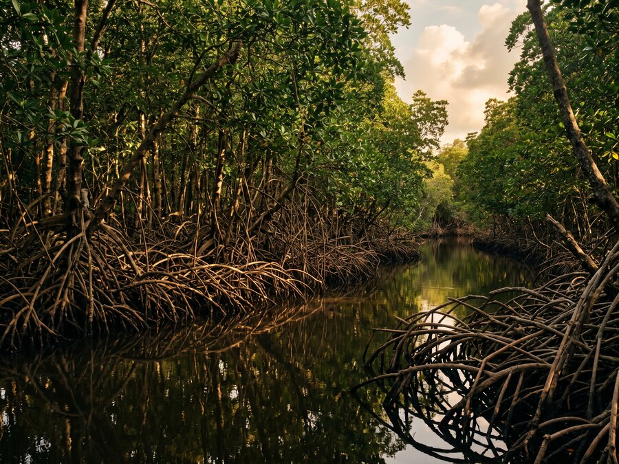

Our Expertise
Mangrove & Delta Restoration
World's Current State
The World's Most Productive Coastal Ecosystems
Coastal water systems — mangroves, tidal marshes, and delta ecosystems — are among the most biologically productive and carbon-dense environments on Earth. Mangrove forests store up to five times more carbon per hectare than tropical rainforests, provide critical nursery habitat for marine species, and protect coastlines from storm damage and erosion.
Yet mangroves have declined by more than 50% globally over the past half century — cleared for aquaculture, coastal development, and agriculture with little understanding of their ecological and economic value.
GEP's mangrove and delta restoration programmes recover these critical ecosystems at scale, working with tidal hydrology, native species selection, and community-based stewardship models to create self-sustaining coastal landscapes.

Why Mangroves Matter
Multiple Returns From a Single Ecosystem
Blue Carbon
Mangroves sequester carbon at rates far exceeding terrestrial forests and lock it in sediments for centuries — making them among the most valuable carbon assets in the natural world.
Coastal Protection
Dense root systems dissipate wave energy, reduce storm surge impact, and prevent shoreline erosion — providing natural infrastructure that protects coastal communities and assets.
Marine Biodiversity
Mangrove forests serve as critical nursery habitat for fish, crustaceans, and other marine species — directly supporting the health of coastal fisheries and food security.
Community Livelihoods
Restored mangroves support sustainable fishing, ecotourism, and non-timber forest products — creating long-term economic value for coastal communities invested in their stewardship.